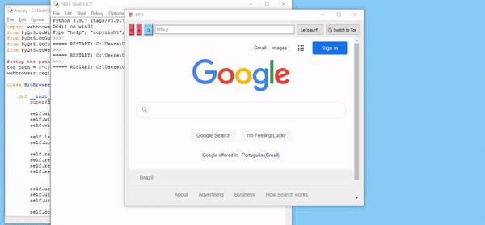

A lightweight browser built with QtWebEngine. The main inspiration was the Mozzarella Ashbadger browser presented in the book
Create GUI Applications with Python & Qt6 by Martin Fitzpatrick. I added the functionality to switch to the TOR browser.
Creating a browser is easier than it seems. I was very surprise
to find out that Qt has its own web module while reading the book
by Fitzpatrick, this is something that is extremely useful. More information on the module
can be found
here, it is based on the Chromium project.
The Mozzarella Ashbadger browser itself
is a fun implementation to showcase the capabilities of Qt.
My version is minimal,
most functionalities can be traced to the
setUrl command. There
are other things too, but they have mainly to do with design.
One
addition I thought would be fun to implement was a button to switch to
the TOR browser. This was done with the webbrowser package and is as
simple as registering the browser at the beginning of the code with:
webbrowser.register("tor", None, webbrowser.BackgroundBrowser(tor_path))
